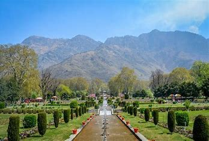
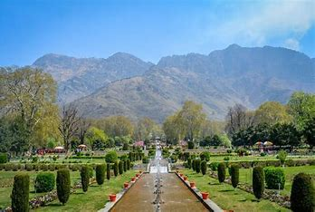
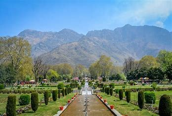

Srinagar is a city in
Indian-administered Jammu and Kashmir in the disputed Kashmir region. It is the largest city and summer
capital of Jammu and Kashmir, which is an Indian-administered union territory. It lies in the Kashmir Valley
along the banks of the Jhelum River, and the shores of Dal and Anchar lakes, between the Hari Parbat and
Shankaracharya hills. The city is known for its natural environment, various gardens, waterfronts and
houseboats. It is also known for traditional Kashmiri handicrafts like the Kashmir shawl (made of pashmina
and cashmere wool), papier-mâché, wood carving, carpet weaving, and jewel making, as well as for dried
fruits.It is the second-largest metropolitan area in the Himalayas (after Kathmandu, the capital of
Nepal).
Founded in the 6th century during the rule of the Gonanda dynasty according to the Rajatarangini, the city
took on the name of an earlier capital thought to have been founded by the Mauryas in its vicinity. The city
remained the most important capital of the Kashmir Valley under the Hindu dynasties, and was a major centre
of learning. During the 14th–16th centuries the city’s old town saw major expansions, particularly under the
Shah Mir dynasty, whose kings used various parts of it as their capitals.It became the spiritual centre of
Kashmir, and attracted several Sufi preachers. It also started to emerge as a hub of shawl weaving and other
Kashmiri handicrafts. In the late 16th century the city became part of the Mughal Empire, many of whose
emperors used it as their summer resort. Many Mughal gardens were built in the city and around Dal lake
during this time, of which Shalimar and Nishat are the most well-known.
After passing through the hands of the Afghan Durranis and the Sikhs in the late 18th and early 19th
century, it eventually became the summer capital of the Dogra kingdom of Jammu and Kashmir in 1846. The city
became a popular tourist destination among Europeans and Indian elites during this time, with several hotels
and its iconic houseboats being built. In 1952, the city became the summer capital of Jammu and Kashmir, a
region administered by India as a state, with Jammu being its winter capital. It was the flashpoint of
violence during the 1990s and early 2000s insurgency in the region. In 2019, it became the summer capital of
a smaller region which is administered by India as a union territory, after the former state's
reorganisation.
Rinchana, a Buddhist convert to Islam who briefly ruled Kashmir in the early 14th
century, built the first mosque in Kashmir on the site of a Buddhist temple in a colony of Srinagar built by
him. The Muslim rulers that came after him established their capitals in areas of present-day old city
Srinagar.During the rule of the Sultans, the city became synonymous with the Kashmir valley, and
'Srinagar' fell into disuse as a name for it.During the rule of Qutbuddin, Islamic preacher Mir
Sayyid Ali Hamadani visited the valley and established his seat of preaching in Srinagar. Sultan Sikandar
Shahmiri (1389–1413 CE) built the Khanqah-e-Moula at this location, and also built the Jamia Mosque at
Nowhatta in 1402. The oldest surviving example of forcible conversion of a Hindu place of worship into
Muslim shrine in Kashmir also appears from Srinagar under Sikandar’s rule.Sikandar’s successor
Zain-ul-Abidin undertook several constructions in and around Srinagar. He built the Zainakadal bridge
connecting the two halves of the city on either side of the Jhelum river, the Mar canal and two islands
inside Dal lake called Sona Lank and Rupa Lank. He also built a stone shrine for his Islamic teacher at
Madin Sahib, and a brick mausoleum for his mother constructed using materials from a Hindu structure and
showing Timurid influences,where he was also buried after his death. He is also credited with
establishing industries around the arts of shawl and carpet weaving, papier-maché, and wood carving in
Srinagar.
